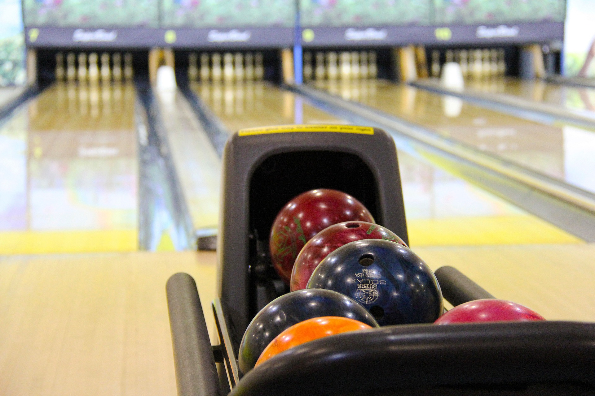
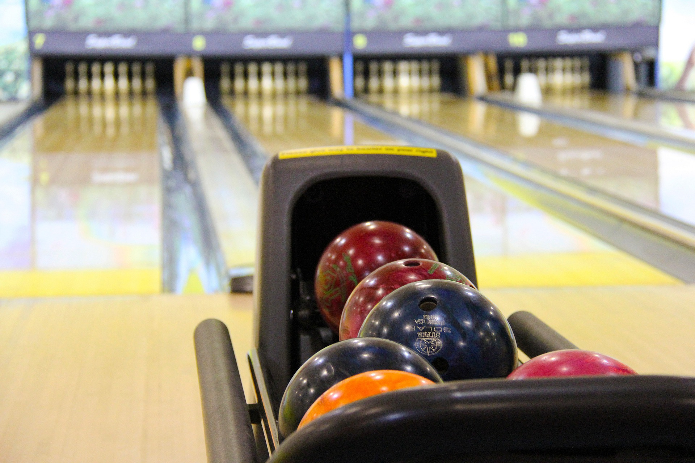

遊びは充電！ 成功してければ、もっと遊べ！
遊ぶ、楽しむことは, リフレッシュであり, エネルギー補給です. 「遊び」は, 人生のエネルギー補給であり, 意識的に遊ばないと, いつかガス欠になってしまいます.

遊ぶ、楽しむことは, リフレッシュであり, エネルギー補給です. 「遊び」は, 人生のエネルギー補給であり, 意識的に遊ばないと, いつかガス欠になってしまいます.

著者:樺沢紫苑 「今日がもっと楽しくなる行動最適化大全」 ~ベストタイムにベストルーティーンで常に「最高の1日」を作り出す~, 株式会社KADOKAWA発行, 2021年7月8日,
著者: THE OWNER エビングハウスの忘却曲線とは？ 本来の意味やビジネスへの賢い活用法を解説 2021/11/02
https://the-owner.jp/archives/6006